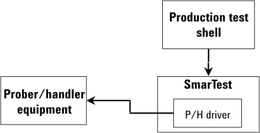
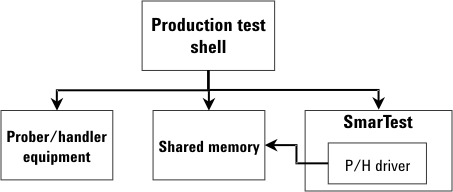
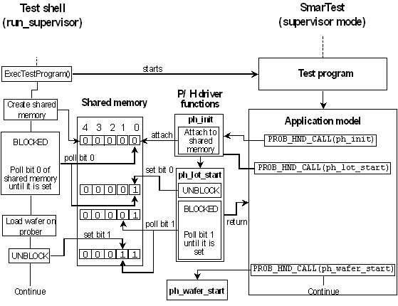

Controlling the material handling equipment with the test shell
The examples presented so far in this chapter have focused on the creation of a custom production test shell where SmarTest controls the material handling equipment (prober/handler). Graphically, this can be represented as follows:

However, this may not always be the case. You may want to have the test shell control the prober/handler directly. For example, this is how the KLA Integrator Test Shell software (not yet ported to Linux) works, where it communicates with the prober directly over the GPIB interface. This can be visualized as follows:

The shared memory which is accessed by both the shell and SmarTest serves to synchronize the activities of both programs with respect to the prober/handler. SmarTest informs the test shell that it is ready for the next wafer (taking the prober as an example) by setting a bit in the shared memory; after that it waits for the shell to complete the loading operation. The test shell informs SmarTest that it has loaded a new wafer by setting another bit in the shared memory; after that it waits in turn for SmarTest to request another wafer. This mechanism of BLOCKING and UNBLOCKING is how the Test Shell and SmarTest remain synchronized.
The following figure illustrates the BLOCKING/UNBLOCKING mechanism used to keep the test shell and SmarTest synchronized.

As you can see, SmarTest accesses the shared memory from the application model by calling functions of the P/H driver library with PROB_HND_CALL(). Note that these are not the generic driver functions of the V93000 driver, but custom C functions belonging to a user defined driver library. This library must be selected as the P/H driver library for the test program in question.
The figure shows synchronization on the wafer level. In a similar way, the shell and SmarTest must be synchronized on the die level.